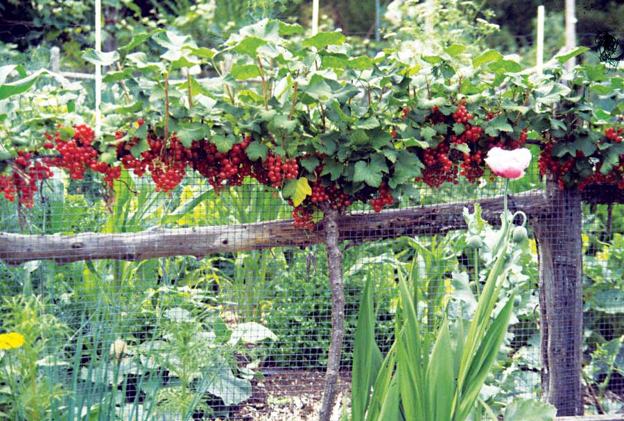

For almost 100 years, the United States waged a war against currants and gooseberries because they serve as an alternate host for white pine blister rust, a devastating disease of northern forests. Both plants were banned in most states east of the Mississippi River, and millions of existing plants were eradicated using pesticides and axes. But by the 1970s, it became apparent that the strategy didn’t work very well for several reasons: Currants and gooseberries grow back from the roots, other wild plants serve as alternate hosts for the disease, and a moist microclimate encourages white pine blister rust more than the presence of a few wild berry bushes.
Meanwhile, the availability of rust-resistant varieties has led to the lifting of restrictions in many areas. At this time, Ribes (the species name of both currants and gooseberries) are still restricted in several eastern states. In others like New York, rust-resistant varieties can be grown, except in high-risk areas. Black currants are nutritional superstars, outshining even blueberries with their potent punches of antioxidants, vitamin C and potassium, and varieties such as ‘Titania’ and ‘Consort’ are so rust-resistant that they are considered immune. ‘Captivator’ and several gooseberries that ripen to rosy red offer good resistance, as do ‘Jonkheer van Tets’ and a few other varieties that ripen to red.
Preferred soil pH for currants is 5.5 to 7.0.
Find currant seeds and plants with our Seed and Plant Finder.
To learn how to use currants in your home landscape, check out the new book Landscaping with Fruit by Lee Reich (Tower, 2009).
See also:
|
 LEE REICH Mouthwatering currants pack a powerful nutritional punch, and many varieties are now resistant to the diseases that once plagued them. |
|
|